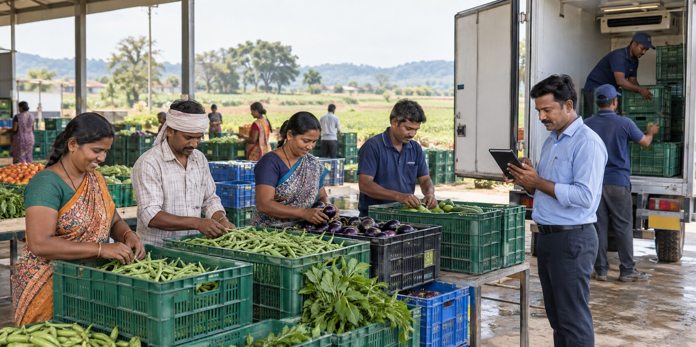

Mobility
Electric fleet transition
Fleet-readiness planning, charging partnerships, technician capacity and reliable route operations.
Focused pathways where cooperative networks can create public value, stronger services and durable local livelihoods.
These are programme directions NFTCI can develop with qualified members and partners. Specific projects, locations and outcomes depend on formal agreements.
Fleet-readiness planning, charging partnerships, technician capacity and reliable route operations.
Coordinated arrival, shuttle, accessibility, hospitality and ground-support services.

Collection, grading, storage, cold chain and movement to institutional and retail buyers.
Experience design, host readiness, common standards and market access for local enterprises.
The federation structures the opportunity and shared operating model. Delivery is routed to members with the right capability and geography.
This approach combines national coordination with local accountability, helping institutions work with a broad cooperative network through a clear delivery framework.
Define outcomes, geography, service levels, commercial terms and governance.
Identify capable members and close readiness gaps through standards and training.
Route work transparently and coordinate execution across locations.
Track service, compliance, reporting and continuous improvement.
A public, institutional or market requirement is clearly defined.
The federation structures standards, governance and member participation.
Qualified societies execute through their local assets and teams.
Performance and reporting remain visible across the programme.
Start with your service requirement, location, scale and intended outcomes.